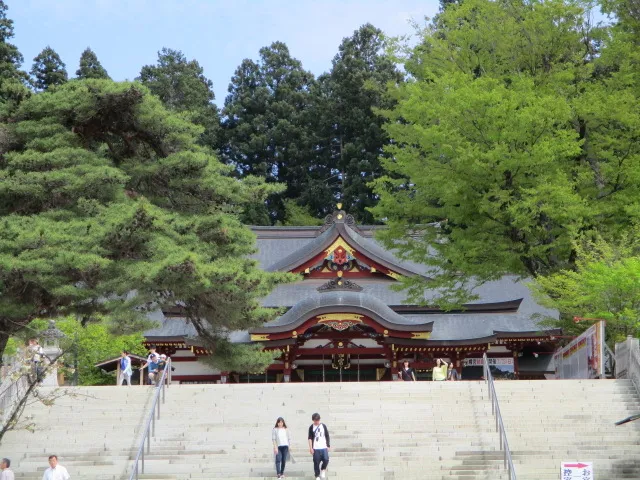
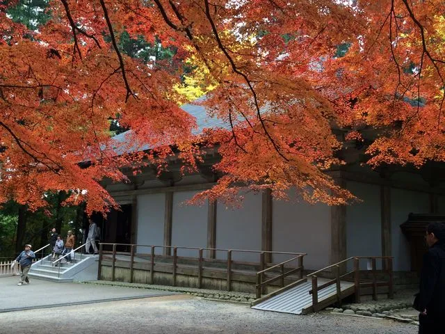
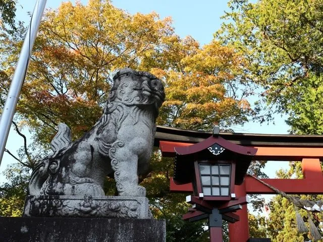

一言
ここのページでは岩手の魅力的な場所を紹介したいと思います

盛岡藩南部氏鎮守。八幡宮例大祭では山車の巡行や流鏑馬が有名、境内には米内光政像、田村了咲句碑などがあります。

金色堂は奥州藤原氏初代清衡公により上棟されました。 藤原氏滅亡後、度重なる火災によって多くの堂塔が焼失したなか金色堂だけが創建当初のまま残り、その堂内には奥州藤原氏４代のご遺体が納置されています。

源義経ゆかりの神社。